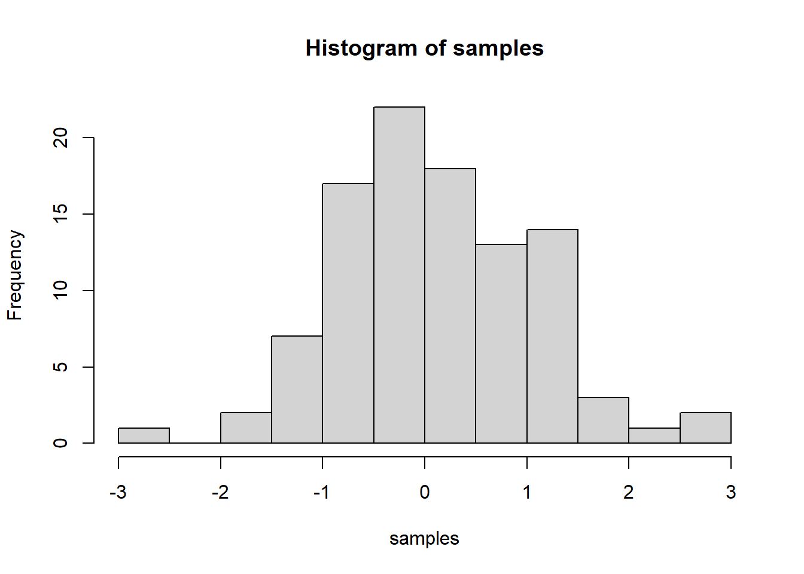

IMPORTANT: You can delete everything in here and start fresh. You might want to start by not deleting anything above this line until you know what that stuff is doing.
This is an .Rmd file. It is plain text with special features. Any time you write just like this, it will be compiled to normal text in the website. If you put a # in front of your text, it will create a top level-header.
Last compiled: 2020-12-06
# Loading libraries
library(tidyverse)
library(readxl)
library(lubridate)
# Importing files
bikes_tbl <- read_excel("C:/SPB_Data/data_raw/DS_101/DS_101/00_data/01_bike_sales/01_raw_data/bikes.xlsx")
orderlines_tbl <- read_excel("C:/SPB_Data/data_raw/DS_101/DS_101/00_data/01_bike_sales/01_raw_data/orderlines.xlsx")
bikeshops_tbl <- read_excel("C:/SPB_Data/data_raw/DS_101/DS_101/00_data/01_bike_sales/01_raw_data/bikeshops.xlsx")
# Joining data by means of Entity-relationship diagrams(ERD)
#left_join(orderlines_tbl, bikes_tbl, by = c("product.id" = "bike.id"))
joined_tbl <- orderlines_tbl %>%
left_join(bikes_tbl, by = c("product.id" = "bike.id")) %>%
left_join(bikeshops_tbl, by = c("customer.id" = "bikeshop.id"))
# Data wrangling
wrangled_tbl <- joined_tbl %>%
# separating location column into state and city
separate(col = location, into = c("city", "state"), sep = ", ") %>%
# Adding a column that will calculate total price
mutate(total.price = price * quantity)
# sales by location(state)
sales_by_location_tbl <- wrangled_tbl %>%
# select columns
select(state, total.price) %>%
# grouping by state and summarizing sales
group_by(state) %>%
summarize(sales = sum(total.price)) %>%
# adding a column that turns the numbers into a currency format
mutate(sales.text = scales::dollar(sales, big.mark = ".", decimal.mark = ",", prefix = "", suffix = " €"))
# visualization(sales by state)
sales_by_location_tbl %>%
# Setup canvas with the columns state (x-axis) and sales (y-axis)
ggplot(aes(x = state, y = sales)) + theme(axis.text.x = element_text(angle = 45, hjust = 1)) +
# Geometries
geom_col(fill = "#2DC6D6") + # Use geom_col for a bar plot
geom_label(aes(label = sales.text)) + # Adding labels to the bars
geom_smooth(method = "lm", se = FALSE) + # Adding a trendline
# Formatting
# scale_y_continuous(labels = scales::dollar) + # Change the y-axis.
# Again, we have to adjust it for euro values
scale_y_continuous(labels = scales::dollar_format(big.mark = ".",
decimal.mark = ",",
prefix = "",
suffix = " €")) +
labs(
title = "Revenue by state",
subtitle = "Upward Trend",
x = "State", # Override defaults for x and y
y = "Revenue"
)# sales by location(state) and year
sales_by_location_year_tbl <- wrangled_tbl %>%
# selecting columns and adding a year column
select(order.date, total.price, state) %>%
mutate(year = year(order.date)) %>%
# grouping by and summarizing sales according to year and location(state)
group_by(year, state) %>%
summarise(sales = sum(total.price)) %>%
ungroup() %>%
mutate(sales.text = scales::dollar(sales, big.mark = ".",
decimal.mark = ",",
prefix = "",
suffix = " €"))
sales_by_location_year_tbl ## # A tibble: 60 x 4
## year state sales sales.text
## <int> <chr> <dbl> <chr>
## 1 2015 Baden-Württemberg 1031924 1.031.924 €
## 2 2015 Bavaria 1301461 1.301.461 €
## 3 2015 Berlin 95853 95.853 €
## 4 2015 Bremen 1395912 1.395.912 €
## 5 2015 Hamburg 423090 423.090 €
## 6 2015 Hesse 308609 308.609 €
## 7 2015 Lower Saxony 584386 584.386 €
## 8 2015 Mecklenburg-Western Pomerania 222003 222.003 €
## 9 2015 North Rhine-Westphalia 3735092 3.735.092 €
## 10 2015 Saxony 238371 238.371 €
## # ... with 50 more rows# visualization( sales by year and state)
sales_by_location_year_tbl %>%
# Set up x, y, fill
ggplot(aes(x = year, y = sales, fill = state)) +
theme(axis.text.x = element_text(angle = 45, hjust = 1)) +
# Geometries
geom_col() + # Run up to here to get a stacked bar plot
geom_smooth(method = "lm", se = FALSE) + # Adding a trendline
# Facet
facet_wrap(~ state) +
# Formatting
scale_y_continuous(labels = scales::dollar_format(big.mark = ".",
decimal.mark = ",",
prefix = "",
suffix = " €")) +
labs(
title = "Revenue by year and state",
subtitle = "Each product category has an upward trend",
fill = "state" # Changes the legend name
)response <- GET("https://api.weatherapi.com/v1/forecast.json?key=4dc64ec537e245f58c733403200312&q=Hamburg&days=2")
response
rawToChar(response$content)
response1 <- content(response)
response1
resp <- pluck(response1, 2)
resp
#as_tibble(resp)
result <- as_tibble(resp)
result
result_3a <- result
write_rds(result_3a,"C:/SPB_Data/lab_journal_website/ws20-business-data-science-basics---lab-journal-Ahmadul-kabir/rds_file/result3a.rds")library(readr)
library(data.table)
result_3a <- read_rds("C:/SPB_Data/lab_journal_website/ws20-business-data-science-basics---lab-journal-Ahmadul-kabir/rds_file/result3a.rds")
result_3a## # A tibble: 3 x 23
## last_updated_ep~ last_updated temp_c temp_f is_day condition wind_mph wind_kph
## <int> <chr> <dbl> <dbl> <int> <named l> <dbl> <dbl>
## 1 1607257809 2020-12-06 ~ 6 42.8 1 <chr [1]> 5.6 9
## 2 1607257809 2020-12-06 ~ 6 42.8 1 <chr [1]> 5.6 9
## 3 1607257809 2020-12-06 ~ 6 42.8 1 <int [1]> 5.6 9
## # ... with 15 more variables: wind_degree <int>, wind_dir <chr>,
## # pressure_mb <dbl>, pressure_in <dbl>, precip_mm <dbl>, precip_in <dbl>,
## # humidity <int>, cloud <int>, feelslike_c <dbl>, feelslike_f <dbl>,
## # vis_km <dbl>, vis_miles <dbl>, uv <dbl>, gust_mph <dbl>, gust_kph <dbl>library(tidyverse) # Main Package - Loads dplyr, purrr, etc.
library(rvest) # HTML Hacking & Web Scraping
library(xopen) # Quickly opening URLs
library(jsonlite) # converts JSON files to R objects
library(glue) # concatenate strings
library(stringi) # character string/text processing
url_home <- "https://www.rosebikes.de/fahrr%C3%A4der/rennrad"
xopen(url_home) # Open links directly from RStudio to inspect them
# Read in the HTML for the entire webpage
html_home <- read_html(url_home)
# Web scraping the bike models
bike_model <- html_home %>%
html_nodes(css = ".catalog-category-bikes__title-text") %>%
html_text() %>%
str_remove_all("\n")
bike_model
# scraping bike prices
bike_price <- html_home %>%
html_nodes(css = ".catalog-category-bikes__price-title") %>%
html_text() %>%
str_remove_all("\\.") %>%
stringr::str_replace_all(pattern = "\nab ", replacement = "") %>%
stringr::str_replace_all(pattern = "\n", replacement = "")
bike_price
# merging the two tables into one
result_3b <- tibble(bike_model, bike_price)
result_3b
write_rds(result_3b, "C:/SPB_Data/lab_journal_website/ws20-business-data-science-basics---lab-journal-Ahmadul-kabir/rds_file/result3b.rds")library(readr)
library(data.table)
result_3b <- read_rds("C:/SPB_Data/lab_journal_website/ws20-business-data-science-basics---lab-journal-Ahmadul-kabir/rds_file/result3b.rds")
result_3b## # A tibble: 9 x 2
## bike_model bike_price
## <chr> <chr>
## 1 PRO SL DISC 1599,00 €
## 2 PRO SL 1199,00 €
## 3 REVEAL FOUR DISC 2499,00 €
## 4 REVEAL FOUR 2099,00 €
## 5 REVEAL SIX DISC 3499,00 €
## 6 X-LITE FOUR DISC 2699,00 €
## 7 X-LITE FOUR 2199,00 €
## 8 X-LITE SIX DISC 3899,00 €
## 9 X-LITE SIX 3499,00 €library(tidyverse)
library(vroom)
# Data Table
library(data.table)
# Counter
library(tictoc)
# importing assignee data
col_types_assignee <- list(
id = col_character(),
type = col_character(),
name_first = col_character(),
name_last = col_character(),
organization = col_character()
)
assignee_tbl <- vroom(
file = "C:/SPB_Data/lab_journal_website/00_data/_patent_data/_raw_data/assignee.tsv",
delim = "\t",
col_types = col_types_assignee,
na = c("", "NA", "NULL")
)
# converting to a data table
assignee_data_frame <- as.data.table(assignee_tbl %>% rename(assignee_id = id))
assignee_data_frame %>% glimpse()
# importing patent assignee data
col_types_patent_assignee <- list(
patent_id = col_character(),
assignee_id = col_character(),
location_id = col_character()
)
patent_assignee_tbl <- vroom(
file = "C:/SPB_Data/lab_journal_website/00_data/_patent_data/_raw_data/patent_assignee.tsv",
delim = "\t",
col_types = col_types_patent_assignee,
na = c("", "NA", "NULL")
)
# converting it to a data table
patent_assignee_data_frame <- as.data.table(patent_assignee_tbl)
patent_assignee_data_frame %>% glimpse()
# merging data( assignee and patent assignee)
tic()
combined_data <- merge(x = assignee_data_frame, y = patent_assignee_data_frame,
by = "assignee_id",
all.x = TRUE,
all.y = FALSE)
toc()
combined_data %>% glimpse()
top_ten <- combined_data %>%
filter(!is.na(type) & type == 2) %>%
group_by(organization, type) %>%
tally(sort = T) %>%
ungroup() %>%
arrange(desc(n))
top_ten
result_4a <- top_ten
result_4a
write_rds(result_4a, "C:/SPB_Data/lab_journal_website/ws20-business-data-science-basics---lab-journal-Ahmadul-kabir/rds_file/result4a.rds")library(readr)
library(data.table)
result_4a <- read_rds("C:/SPB_Data/lab_journal_website/ws20-business-data-science-basics---lab-journal-Ahmadul-kabir/rds_file/result4a.rds")
result_4a## # A tibble: 226,687 x 3
## organization type n
## <chr> <chr> <int>
## 1 International Business Machines Corporation 2 139092
## 2 General Electric Company 2 47122
## 3 Intel Corporation 2 42157
## 4 Hewlett-Packard Development Company, L.P. 2 35573
## 5 Microsoft Corporation 2 30086
## 6 Micron Technology, Inc. 2 28001
## 7 QUALCOMM Incorporated 2 24703
## 8 Texas Instruments Incorporated 2 24182
## 9 Xerox Corporation 2 23174
## 10 Apple Inc. 2 21821
## # ... with 226,677 more rows2 & 3.
library(tidyverse)
library(vroom)
# Data Table
library(data.table)
# Counter
library(tictoc)
# challange part 1
# importing assignee data
col_types_assignee <- list(
id = col_character(),
type = col_character(),
organization = col_character()
)
assignee_tbl <- vroom(
file = "C:/SPB_Data/lab_journal_website/00_data/_patent_data/Patent_data_reduced/assignee.tsv",
delim = "\t",
col_types = col_types_assignee,
na = c("", "NA", "NULL")
)
# converting to a data table
assignee_data_frame <- as.data.table(assignee_tbl %>% rename(assignee_id = id))
assignee_data_frame %>% glimpse()
# importing patent assignee data
col_types_patent_assignee <- list(
patent_id = col_character(),
assignee_id = col_character()
)
patent_assignee_tbl <- vroom(
file = "C:/SPB_Data/lab_journal_website/00_data/_patent_data/Patent_data_reduced/patent_assignee.tsv",
delim = "\t",
col_types = col_types_patent_assignee,
na = c("", "NA", "NULL")
)
# converting it to a data table
patent_assignee_data_frame <- as.data.table(patent_assignee_tbl)
patent_assignee_data_frame %>% glimpse()
# merging data( assignee and patent assignee)
tic()
combined_data <- merge(x = assignee_data_frame, y = patent_assignee_data_frame,
by = "assignee_id",
all.x = TRUE,
all.y = FALSE)
toc()
combined_data %>% glimpse()
# Answer to patent dominance question
top_ten <- combined_data %>%
filter(!is.na(type) & type == 2) %>%
group_by(organization, type) %>%
tally(sort = T) %>%
ungroup() %>%
arrange(desc(n))
top_ten
# challenge part 2
# importing the reduced patent data
col_types_patent <- list(
id = col_character(),
date = col_date("%Y-%m-%d"),
num_claims = col_double()
)
patent_tbl <- vroom(
file = "C:/SPB_Data/lab_journal_website/00_data/_patent_data/Patent_data_reduced/patent.tsv",
delim = "\t",
col_types = col_types_patent,
na = c("", "NA", "NULL")
)
patent_tbl
# converting to data frame
patent_data_frame <- as.data.table(patent_tbl %>% rename(patent_id = id))
patent_data_frame %>% glimpse()
# merging data( assignee and patent assignee and patent)
tic()
combined_new_data <- merge(x = combined_data, y = patent_data_frame,
by = "patent_id",
all.x = TRUE,
all.y = FALSE)
toc()
combined_new_data %>% glimpse()
#manipulating data
merged_data <- combined_new_data %>%
select(organization, date, type) %>%
mutate(year = year(date)) %>%
filter(year == 2014)
merged_data %>% glimpse()
# Answer to recent patent activity question
top_ten_new <- merged_data %>%
filter(!is.na(type) & type == 2) %>%
group_by(organization, type, year) %>%
tally(sort = T) %>%
ungroup() %>%
arrange(desc(n))
top_ten_new
# challange part 3
# importing uspc data
col_types_uspc <- list(
patent_id = col_character(),
mainclass_id = col_character(),
sequence = col_character()
)
uspc_tbl <- vroom(
file = "C:/SPB_Data/lab_journal_website/00_data/_patent_data/Patent_data_reduced/uspc.tsv",
delim = "\t",
col_types = col_types_uspc,
na = c("", "NA", "NULL")
)
# converting to a data table
uspc_data_frame <- as.data.table(uspc_tbl)
uspc_data_frame %>% glimpse()
# # merging data( assignee and patent assignee and uspc)
tic()
combined_newest_data <- merge(x = combined_data, y = uspc_data_frame,
by = "patent_id",
all.x = TRUE,
all.y = FALSE)
toc()
combined_newest_data %>% glimpse()
# top 5 USPTO tech main classes from the companies worldwide
top_ten_worldwide <- combined_newest_data %>%
select(organization, type, mainclass_id, sequence) %>%
filter(sequence == 0) %>%
group_by( mainclass_id) %>%
tally(sort = T) %>%
ungroup() %>%
arrange(desc(n))
top_ten_worldwide
result_4b <- top_ten_new
write_rds(result_4b, "C:/SPB_Data/lab_journal_website/ws20-business-data-science-basics---lab-journal-Ahmadul-kabir/rds_file/result4b.rds")
result_4c <- top_ten_worldwide
write_rds(result_4c, "C:/SPB_Data/lab_journal_website/ws20-business-data-science-basics---lab-journal-Ahmadul-kabir/rds_file/result4c.rds")library(readr)
library(data.table)
result_4b <- read_rds("C:/SPB_Data/lab_journal_website/ws20-business-data-science-basics---lab-journal-Ahmadul-kabir/rds_file/result4b.rds")
result_4b## # A tibble: 22,753 x 4
## organization type year n
## <chr> <chr> <int> <int>
## 1 International Business Machines Corporation 2 2014 7547
## 2 Microsoft Corporation 2 2014 3165
## 3 Google Inc. 2 2014 2668
## 4 QUALCOMM Incorporated 2 2014 2597
## 5 Apple Inc. 2 2014 2201
## 6 General Electric Company 2 2014 1873
## 7 Hewlett-Packard Development Company, L.P. 2 2014 1638
## 8 AT&T INTELLECTUAL PROPERTY I, L.P. 2 2014 1625
## 9 Intel Corporation 2 2014 1616
## 10 GM Global Technology Operations LLC 2 2014 1533
## # ... with 22,743 more rowsresult_4c <- read_rds("C:/SPB_Data/lab_journal_website/ws20-business-data-science-basics---lab-journal-Ahmadul-kabir/rds_file/result4c.rds")
result_4c## # A tibble: 544 x 2
## mainclass_id n
## <chr> <int>
## 1 257 10272
## 2 370 8361
## 3 455 7849
## 4 709 5608
## 5 438 5127
## 6 345 4961
## 7 435 4443
## 8 514 4363
## 9 424 4027
## 10 348 4016
## # ... with 534 more rowsHere’s an even lower level header
Last compiled: 2020-12-06
I’m writing this tutorial going from the top down. And, this is how it will be printed. So, notice the second post is second in the list. If you want your most recent post to be at the top, then make a new post starting at the top. If you want the oldest first, do, then keep adding to the bottom
So far this is just a blog where you can write in plain text and serve your writing to a webpage. One of the main purposes of this lab journal is to record your progress learning R. The reason I am asking you to use this process is because you can both make a website, and a lab journal, and learn R all in R-studio. This makes everything really convenient and in the same place.
So, let’s say you are learning how to make a histogram in R. For example, maybe you want to sample 100 numbers from a normal distribution with mean = 0, and standard deviation = 1, and then you want to plot a histogram. You can do this right here by using an r code block, like this:
samples <- rnorm(100, mean=0, sd=1)
hist(samples)
When you knit this R Markdown document, you will see that the histogram is printed to the page, along with the R code. This document can be set up to hide the R code in the webpage, just delete the comment (hashtag) from the cold folding option in the yaml header up top. For purposes of letting yourself see the code, and me see the code, best to keep it the way that it is. You’ll learn that all of these things and more can be customized in each R code block.